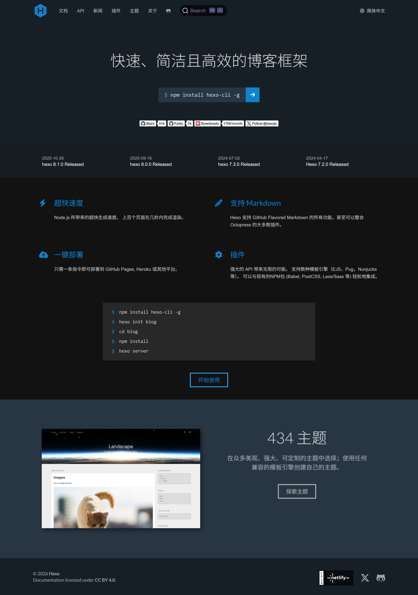

Hexo 博客搭建教程
前言
这个博客起源于2020年暑假发现的 Gridea ，然后这个其实当时也是比较新的软件（RT

然后部署了一个基于 Gridea + Github Page 的博客（也是现在这个网址）
好处就是有客户端，但是主题太少自由度不高，后来就放弃 Gridea 转向 Hexo 了。（其实也是因为自己很久没维护了）
虽然同样是静态博客生成器，也是 Github Page 部署，Hexo的社区生态可能就要丰富一些qwq

搭建过程
其实 Hexo文档 里就有
1. 环境准备
2. 安装 Hexo
终端输入
1 | npm install -g hexo-cli |
3. 初始化
1 | hexo init my-blog |
其中 my-blog 为你的博客文件夹
这一步做完后你的博客目录大概长这样
1 | . |
此时你在博客目录下打开终端
1 | hexo g |
然后访问 http://localhost:4000/ 就可以看到你的博客啦
4. 安装主题
默认主题是 landscape，你可以在 这里 寻找自己喜爱的主题，我目前使用的是 Butterfly。
1 | git clone https://github.com/jerryc127/butterfly-theme.git themes/butterfly |
当然也可以直接下载解压后放入theme文件夹，安装完后去 _config.yml 里设置主题。
5. 基础配置
在网站配置文件和主题文件中进行
- _config.yml
- _config.butterfly.yml（这个文件在对应主题文件夹里，建议放到博客根目录，便于主题更新）
部署
我使用的是 GitHub Pages，当然也可以部署到别的平台或者自己的服务器上。
具体步骤如下
-
注册 Github 账号
-
建立一个名为
你的用户名.github.io的仓库 -
1
npm install hexo-deployer-git --save
-
如果你不想提供用户名和密码，可以配置 SSH 进行部署
注意你的 Windows 用户名应不含中文
-
修改
_config.yml1
2
3
4
5deploy:
type: git
repo: git@github.com:你的用户名/你的用户名.github.io.git
branch: main
url: https://你的用户名.github.io/ -
在博客文件夹下右键，Git Bash Here
1
2git config --global user.name "你的GitHub用户名"
git config --global user.email "你的GitHub邮箱" -
然后生成 SSH 密钥
1
ssh-keygen -t rsa -C "你的GitHub邮箱"
-
（可选）添加 SSH 配置文件（似乎是 Github 默认的22端口不能用了要换成443端口？）
运行以下命令创建配置：
1
touch ~/.ssh/config
然后用记事本打开编辑：
1
notepad ~/.ssh/config
在打开的文件里粘贴以下内容：
1
2
3
4Host github.com
Hostname ssh.github.com
User git
Port 443保存并关闭。
-
把公钥添加到 GitHub
查看公钥内容：
1
cat ~/.ssh/id_rsa.pub
复制输出的内容（以 ssh-rsa 开头的那一长串）。
在 GitHub 上添加：
- 打开 https://github.com/settings/keys
- 点击 “New SSH key”
- Title 随便填
- Key 粘贴刚才复制的公钥
- 点击 “Add SSH key”
-
测试连接
1
ssh -T git@github.com
成功的话会显示：
1
Hi 你的用户名! You've successfully authenticated, but GitHub does not provide shell access.
-
-
然后执行
1 | hexo clean # 清除缓存文件和生成的静态文件 |
过一会即可在 https://你的用户名.github.io/ 上看到你的博客啦~
主题配置
具体主题配置参考 Butterfly主题文档
以下是我个人使用的一些配置
1. 固定链接（abbrlink）
需下载 hexo-abbrlink 插件（或者其他类似插件）：
1 | npm install hexo-abbrlink --save |
然后修改配置文件 _config.yml
主要是文章链接不固定会影响下面的评论记录功能
每次生成博客时会为文章生成一个固定链接（参考本文链接）
2. 评论系统
Butterfly主题支持多种评论系统，并支持双评论系统，我采用的是 Twikoo，免费，有后台，并支持邮箱/微信提醒。
-
由于了解到 Vercel 在国内访问较慢（但如果绑自己域名会快一些），并且腾讯云额度有限，于是接下来采用 Netlify 部署后端
注意 Netlify 在国内一些省份的某些运营商网络环境下访问速度较慢，需自行更换网络环境
-
首先申请并登录 Netlify
-
把 这个仓库 fork 到自己的仓库下
-
在 Netlify 中依次选择
Add new project、Import an existing project，选择 Github 中自己刚 fork 的仓库 -
找到环境变量
environment variables，Key填MONGODB_URI，Value填刚刚获得的 MongoDB 连接字符串，点击Deploy twikoo-netlify进行部署 -
可以绑自己的域名，如果不绑，那么一个形如
https://xxx.netlify.app/.netlify/functions/twikoo的字符串即是你的环境id，其中xxx替换为你的 project 名 -
修改
_config.butterfly.yml：1
2comments:
use: twikoo以及
1
2twikoo:
envId: https://xxx.netlify.app/.netlify/functions/twikoo
-
-
此时，再执行一次
hexo g -d等待一会后刷新页面，即可看到你的评论系统啦~